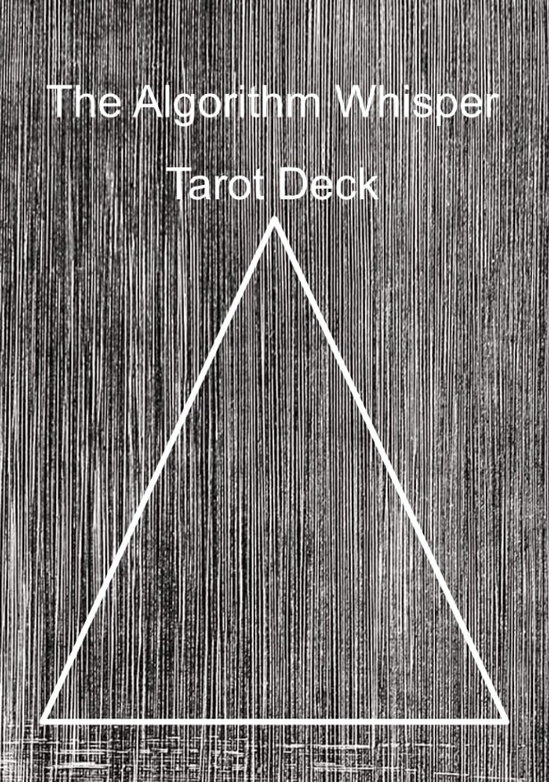
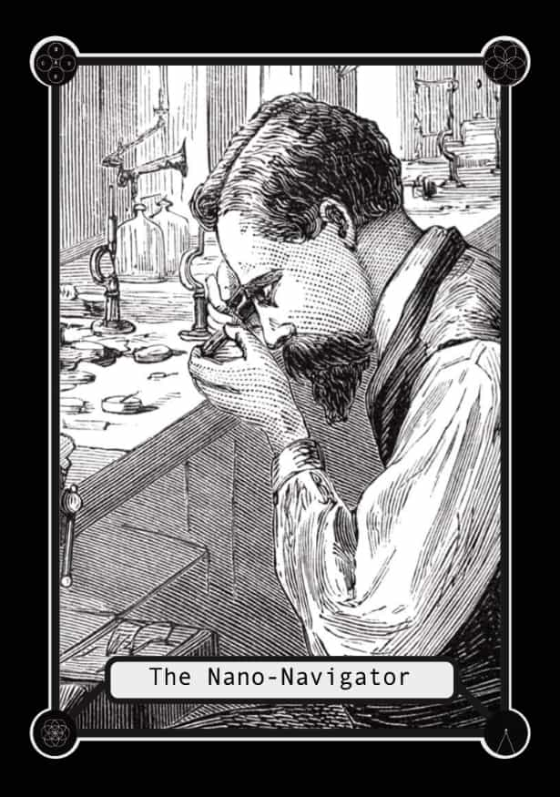

The Algorithm Whisper
Tarot Deck
Past, Present and the Future blur, converge, and can potentially separate. New timelines can be Created. The End is the Beginning.
-
The Algorithm Whisper
 -
The Binary Oracle
This card represents the need to make a decision based on a balance between information and intuition. It encourages seeking wisdom and guidance in the digital realm to make informed choices.

-
The Firewall Guardian
Signifying the importance of setting strong boundaries in your digital life, this card encourages you to protect yourself and your digital presence from potential threats and intrusions.

-
The Pixel Portal
This card signifies a time of transformation and opportunities in the digital world. It suggests exploring new realms or ideas in the digital space, opening doors to fresh possibilities.
-
The Data Alchemist
This card suggests the need to adapt, transform, or innovate in response to evolving digital circumstances. It encourages you to find creative solutions and turn challenges into opportunities.
-
The Algorithm Architect
Indicating the significance of planning and strategy, this card advises finding your way through complex digital challenges with a structured approach.
-
The Virtual Dreamer
Encouraging creativity and exploration, this card prompts you to embrace your creative side and venture into new virtual realms for inspiration.

-
The Data Anomaly
This card warns of unexpected disruptions in the digital space, emphasizing the importance of adaptability and crisis management to address unforeseen issues.

-
The Circuit Sage
Signifying a time of gaining insight or wisdom through digital channels, this card suggests you may receive guidance from a mentor or expert in the digital field.

-
The Avatar Shaman
Suggesting spiritual or emotional guidance in the digital realm, this card encourages seeking support and wisdom from online communities or mentors.

-
The Data Harvest
This card indicates a time of reaping the benefits of your digital efforts or investments. It's a period of abundance and rewards.
-
The Quantum Vision
Suggesting a new perspective or deep understanding of a digital issue, this card hints at a transformative insight on the horizon.
-
The Trojan Horse
A warning card, it advises caution against hidden threats or betrayals within the digital spaces you trust.

-
The Digital Labyrinth
This card represents the need to navigate complex digital systems and challenges. It encourages exploring multiple options before finding a solution.
-
The Digital Hivemind
Signifying the power of collective efforts, this card encourages working together and leveraging group wisdom in the digital world.

-
The Cyber Cultist
A cautionary card, it warns against fanatical devotion to digital idols or trends that might lead to unhealthy consequences.
-
The Binary Abyss
Suggesting a period of uncertainty and confusion in the digital world, this card encourages confronting your fears and uncertainties.
-
The Deep Web
Signifying the need to explore hidden aspects of the digital realm, this card invites you to uncover the unknown and delve into uncharted territories.

-
The Techno-Emperor
Signifying a period of asserting authority and taking charge in the digital realm, this card represents leadership and control.

-
The Data Vampire
A warning card, it advises against unhealthy digital consumption and influences that may be draining you.

-
The Digital Reaper
Suggesting the necessity of letting go of outdated digital habits, relationships, or ideas to make room for new beginnings, this card symbolizes transformation and renewal.
-
The Phantom Network
Signifying invisible ties and connections in the digital world, this card emphasizes recognizing underlying digital relationships and influences.
-
The Lost Algorithm
Representing a period of uncertainty and the search for a clear path or purpose in the digital landscape, this card encourages introspection.

-
The Dark Web Oracle
Signifying the ability to uncover hidden information, secrets, or personal truths in the digital domain, this card represents revelation and discovery.

-
The Codebreaker
This card indicates that you possess the skills and intuition needed to uncover hidden digital truths and solve complex problems.

-
The Echo Chamber
A cautionary card, it warns against surrounding yourself only with like-minded voices and encourages seeking diverse viewpoints for balanced perspectives.
-
The Quantum Paradox
Suggesting a need to embrace ambiguity and navigate situations with multiple possible outcomes in the digital world, this card represents adaptability and open-mindedness.

-
The Holographic Oracle
Encouraging you to tap into digital realms for profound insights and transcend everyday limitations, this card signifies the potential for higher understanding.
-
The Data Puppeteer
Reminding you of the impact you have on others in the digital world, this card emphasizes the responsibility that comes with your digital influence.
-
The Nano-Navigator
Encouraging a deep dive into intricate digital matters and exploring the minutiae, this card signifies attention to detail and precision.
-
The Zero-Day Revelation
Signifying the importance of understanding and addressing hidden vulnerabilities in the digital space, this card represents awareness and vigilance.
-
The E-mail Emissary
Suggesting that a message or communication holds significance in your digital life, this card represents the power of communication and connection.
-
The Malware Mage
A warning card, it indicates the presence of deceitful actions or hidden threats in the digital space. It advises caution and vigilance.
-
The Cyber Void
Suggesting a period of isolation or feeling lost in the digital world, this card encourages introspection and seeking inner guidance.

-
The Ghost in the Machine
Signifying concealed forces or hidden information at play in the digital realm, this card represents the importance of uncovering hidden truths.
-
The Pixel Prophet's Paradox
Encouraging the embrace of contradictions and mysteries in the digital world, this card signifies the wisdom that can be found in complexity.
-
The Phantom Password
Indicates a quest for hidden knowledge and the importance of protecting your digital accounts and personal information.